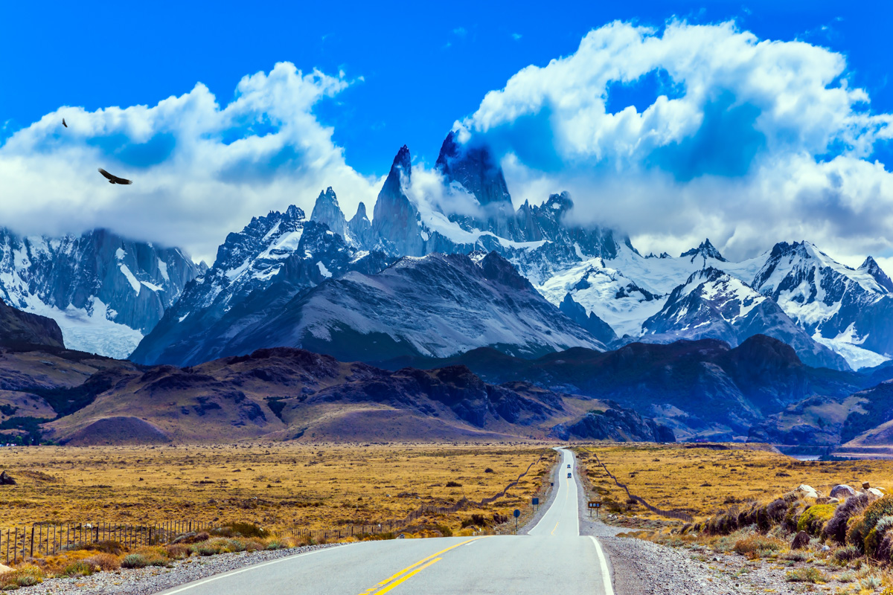
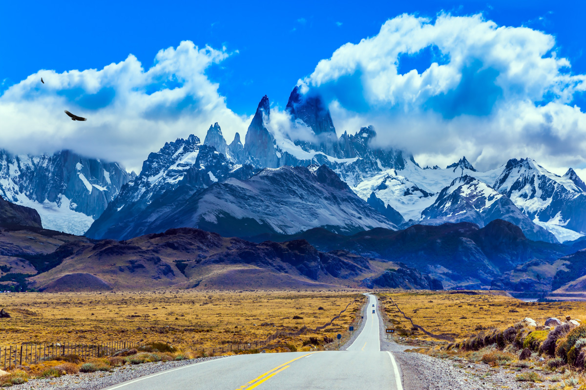

Patagonia, Argentina/Chile
At the edge of the world, jagged mountain peaks pierce clouds while massive glaciers carve their ancient paths. Here, wilderness stretches beyond imagination, offering the purest connection to Earth's raw, untamed beauty.
 
